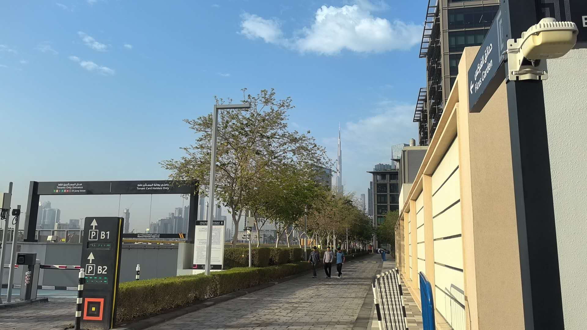

2026-04-04 Daily Record
星期六 | 2 entries
23:18
折腾了一整天，总算把自己的日记系统搭了起来。以后在微信里随手发段语音、拍张照片，就能自动攒下来，晚上整理成一篇像样的日记。想想还挺有成就感的。


23:18
迪拜的午后，阳光毫不吝啬地铺满整条街道。远处的哈利法塔在蓝天白云间静静伫立，Ficus Garden 的指示牌在路边随意地指着方向。几个行人沿着绿荫小道慢悠悠地走着，这座城市总有一种让人放慢脚步的魔力。
今天的主要工程是搭建个人日记系统。从 Claude Code 升级，到配置微信接入、Groq 语音识别，再到写收集脚本和 HTML 生成器，一路踩了不少坑。最离谱的是在自己的会话里执行重启命令，相当于拔自己的网线，来来回回卡了好几次才想明白。好在最后都理顺了——语音自动转文字，图片自动归档，文字对话里的精华整理时再提取，最终生成一份带点温度的生活随笔。
还顺手把服务器时区改成了迪拜时间。毕竟人在哪里，时间就该跟着在哪里。晚安，迪拜。